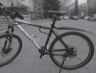

车子有了，尽管有些大，不过，不影响我的高兴的心情此博文包含图片
骑行，最少需要个自行车！买个什么自行车呢？前两天在网上看了几篇关于自行车的文章，也向有经验的网友请教，网友们挺喜欢指导我这个新手的。不过，建议多了，我更是茫然无头绪。
我比较纠结的问题：我很可能只骑行一次，所以买个好车子有没有必要（如果有一次性的车子最好了）
不过，网友 Jie 的意见很符合我心意：“不确定长期玩就收个捷安特 ATX690, 美利达勇士 600 先玩着，二手的 1000 左右，玩高兴了再换。 ”
说干就干，第二天（就是昨天）我就在网上看到了个卖山地车的，网上说 9成新、发票全。果断联系，约好了见面地点。我去的有点早，等了一会，哥们骑着车子来了。我仔细一看是捷安特的山地ATX770-d，比Jie 说的档次要好不少，价格也好不少，咱也没骑过山地，试了一下，好久没骑了，有点打晃，被那哥们嘲笑了一通，算了不试了，高兴地交钱成交（要了发票，一看是一张他原来买车的收据，算了，收据就收据），高高兴兴骑了 1 个小时，然后去捷安特店里做了个保养，师傅一句这架子应该是 19 寸的，让我又回到现实，怎么把这个忘了，我比较合适的尺寸是 17 寸车架，看来咱一直在跟 28 大架子的在比较，没经验啊。不过，这一切都不是问题，基本没影响我高兴的心情。
发个车子的照片，大家看看，刚照的，车子都没洗呢。不过，从车子也能看出我的一些风格和品德：含蓄、谦虚、内敛、不张扬、不拘泥小节！也许仔细看看，还能看出更多。
